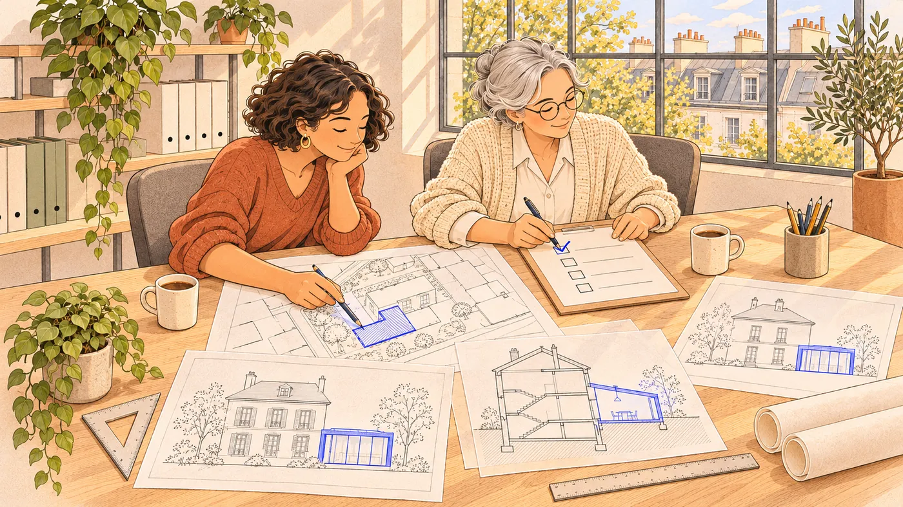
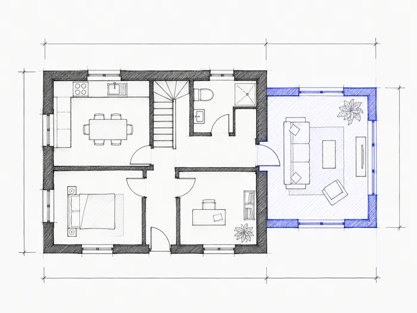
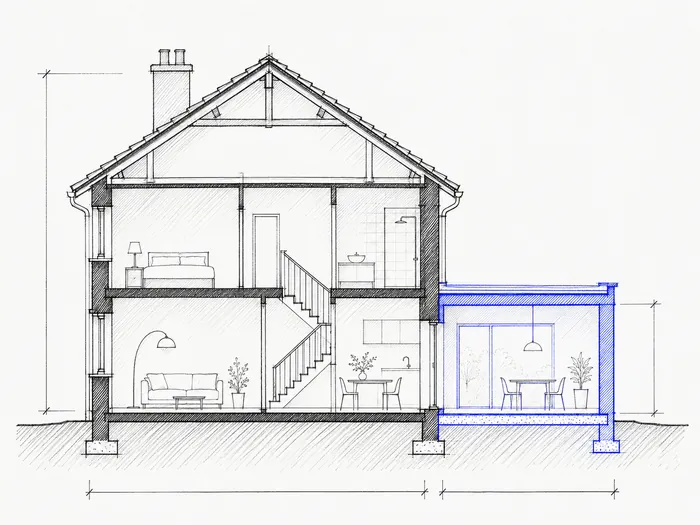

1 · UNE MINUTE
Vous choisissez votre projet
Deux ou trois questions, votre prix, le paiement. Pas de devis à attendre, pas de compte à créer.
Un abri, une piscine, une extension ? On prépare votre dossier de mairie, plans compris, en respectant les règles de votre commune. Vous n'avez qu'à le déposer.

Deux ou trois questions, et vous savez ce qu'il vous faut et ce que ça coûte.
Pas besoin de savoir dessiner ni de connaître le jargon. Quelques photos et deux ou trois mesures suffisent.
Deux ou trois questions, votre prix, le paiement. Pas de devis à attendre, pas de compte à créer.

Depuis votre téléphone. Un guide vous dit quoi photographier et quoi mesurer.

On vérifie les règles de votre commune, on dessine les plans, on remplit le formulaire. Une deuxième personne relit tout.

En ligne, avec notre guide. Ou on s'en charge pour vous.

Chaque plan est dessiné pour votre maison, pas copié d'un modèle. Le formulaire officiel est rempli, il ne vous reste qu'à signer.





| Outil automatique | Bureau d'études classique | Le Bon Permis | |
|---|---|---|---|
| Qui dessine les plans ? | Vous, avec un logiciel | Un dessinateur | Nous |
| Règles de votre commune | À vérifier vous-même | Vérifiées | Vérifiées avant de dessiner |
| Relu par une deuxième personne | Non | Parfois | Toujours |
| Prix d'une déclaration de travaux | 39 à 89 € | 190 à 590 € | 149 € |
| Dossier prêt en | Quelques minutes | 5 à 15 jours | 48 h |
| Si la mairie refuse | Vous recommencez | Ça dépend | On corrige et on redépose, sans frais |
Près d'une église, dans un village protégé ou dans un immeuble, les règles se durcissent et les refus sont fréquents. On connaît ces règles, et on prépare le dossier pour qu'il passe du premier coup.

Une petite équipe d'urbanistes et de dessinateurs. Chaque dossier passe entre deux paires de mains avant de vous être envoyé.
« Une question ? Vous parlez à la personne qui prépare votre dossier. Pas à un robot. »
Tout compris : règles vérifiées, plans, formulaire, relecture, et les pièces que la mairie pourrait demander. Prix TTC.

Abri de jardin, piscine, pergola, carport, clôture, portail, fenêtres, façade, panneaux solaires, climatisation, petite démolition.
PRÊT EN 48 H
Extension, véranda, combles, surélévation, lucarne, toiture, grange ou local transformé en logement, quand une déclaration suffit.
PRÊT EN 48 H
Une chambre, un bureau ou un salon à la place du garage, nouvelle façade comprise.
PRÊT EN 48 H
Grande extension, surélévation ou transformation avec travaux de façade, quand la mairie exige un permis.
PRÊT EN 5 JOURS
Le permis de construire complet, à partir des plans de votre constructeur ou des vôtres, jusqu'à 150 m².
PRÊT EN 5 JOURSUn refus ou une pièce manquante à cause d'une erreur dans le dossier ? On corrige et on redépose, sans rien vous facturer.
Une reprise par dossier, dans les 6 mois qui suivent la décision. Ne sont pas couverts : un projet modifié après la commande, des photos ou des mesures inexactes, et un refus portant sur le projet lui-même alors qu'on vous avait prévenu avant le dépôt. C'est toujours la mairie qui décide en dernier.Vous n'avez pas à le savoir, c'est notre travail. En général, une déclaration suffit jusqu'à 20 m² créés, ou 40 m² pour une extension en ville. Au-delà, il faut un permis.
Pour les petits travaux, vous choisissez le modèle, on le place et on vérifie qu'il est autorisé. Pour un agrandissement, un croquis ou une description suffit. Si vous n'avez qu'une idée, l'option conception (690 €) vous apporte deux propositions, les plans intérieurs et une vue 3D.
Non. On les déclare après coup, au même prix, à partir de photos de ce qui existe. Choisissez « Déclarer des travaux déjà faits » dans les projets.
Un mois pour une déclaration, deux mois pour un permis de maison, un mois de plus près d'un monument historique. À compter du dépôt du dossier complet.
Seulement si votre maison dépasse 150 m² après les travaux. Dans ce cas, on vous met en relation avec un architecte partenaire.
Oui. Vous payez par carte, Apple Pay, Google Pay ou PayPal, sur une page sécurisée. Vos données bancaires ne passent jamais par nous.
Le Bon Permis est un service de LK Invest, société installée à Paris. On prépare des dossiers de mairie pour les particuliers, partout en France. Entreprise privée, sans lien avec les administrations.
Choisissez votre projet : en une minute, vous saurez ce qu'il vous faut et ce que ça coûte.
Voir mon prix en une minute